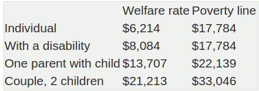

Alert is not a one-on-one individual problem-solving group. We are a "voice" for the general public (on welfare assistance or part of the working poor) who, in one way or another, may not be getting a fair shake with regard to their needs/rights.  We have a housing study that was done about three years ago, and presented. There is certainly a problem with rental rates that can't be afforded. There is the fuel oil issue. That's just a few of the things we want to see addressed. We are making a public stand in the hope of getting the attention of both provincial and federal politicians in advance of spring budgets. We also ask all Islanders to make the needs of the poor on P.E.I. an election issue.